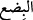

Müşrikler sevindi ve bu durumdan dolayı müminleri üzecek sözler söyleyerek şöyle
dediler: “Siz ve hristiyanlar ehl-i kitapsınız. Biz ve İranlılar ümmiyyiz (ehl-i kitap
değiliz). -Çünkü İranlılar mecûsi idiler- Bizim kardeşlerimiz sizin kardeşlerinize üstün
geldi. Biz mutlaka size üstün geleceğiz.” Bu durum müslümanlara ağır geldi ve
üzüldüler. Bunun üzerine Allah bu âyeti indirdi ve işin onların iddiâ ettiklerinden başka
olacağını haber verdi.
Ebû Bekir (r.a.) müşriklere: “Allah asla sizin gözünüzü aydın etmez/sizi sevindirmez.
Allâh’a yemin olsun ki mutlaka Rumlar birkaç sene sonra İranlılar’ı yenecek.” dedi.
Lanetli Übey b. Halef ise ona şöyle cevap verdi: “Yalan söyledin. Aramızda bir müddet
tayin et de onun üzerine seninle bahse girelim.” dedi. Hz. Ebû Bekir onunla on genç dişi
deve üzerine karşılıklı bahse girdi.
Birbirleriyle, doğru sözlü olanın diğerinden on deve alacağına dâir anlaşma yaptılar.
Süreyi de üç yıl olarak belirlediler. Hz. Ebû Bekir (r.a.) durumu Rasûlullah (s.a.)’e
haber verdi Rasûlullah (s.a.): “__WORD__” üçten dokuza kadar olan sayılardır. Bahsin
miktarını artır ve müddeti uzat.”[6] buyurdu. Bunun üzerine bahsi yüz deve üzerine ve
müddeti dokuz yıla çıkardılar.
Übey, Ebû Bekir (r.a.)’ın Medine’ye muhâcir olarak çıkıp gitmesinden çekinince onun
yanına vardı ve onu sıkıştırdı. Bunun üzerine Ebû Bekir (r.a.)’a oğlu Abdurrahman (r.a.)
kefil oldu. Übey Uhud savaşı için yola çıkmak istediğinde Ebû Bekir (r.a.)’ın oğlu
Muhammed (r.a.) onun yanına vardı ve onu sıkıştırdı. O da ona bir kefil gösterdi. Übey
Uhud’a gitti ve Rasûlullah (s.a.)’in mızrağından aldığı bir yaradan dolayı Uhud’dan
döndükten sonra öldü. Rumlar, yedinci yılın başında İranlılar’a üstün geldiler.
O şöyle gerçekleşti: Şehriyâr ve Ferhân, bir kısım Rum şehirlerini ele geçirdiler.
Kötü düşüncelilerin gammazlaması sonucu iki kardeş komutana karşı Perviz’in
düşüncesi değişti. Birini diğeri eliyle öldürmek istedi. İki kardeş komutan bu durumdan
haberdar oldular, keyfiyeti Rum hükümdarı Hirakl’e bildirdiler. Hıristiyanlığı kabul
ettiler ve Rum ordusunun komutanı oldular. Farslıları mağlup edip bir kısım şehirlerini
aldılar. Rûmiyye şehrini de o zaman imar ettiler/kurdular. Bu ise Hudeybiye günü oldu.
el-Vasît’ta ise şöyle der: “Cibril, İranlıların hezimete uğradığı ve Rumların onlara
üstün geldiği haberini Rasûlullah (s.a.)’e getirdi. Bu ise Bedir gününe rast geldi.”
Ebû Bekir (r.a.) bahse giriştikleri yüz deveyi Übeyy’in vârislerinden aldı ve
Rasûlullah (s.a.)’e getirdi. Rasûlullah (s.a.) kendisine: “Onları tasadduk et.” buyurdu.
Ebû Bekir (r.a.) da Rasûlullah (s.a.)’in emri ile onların hepsini sadaka olarak dağıttı.
Bu hâdise, “Şarap, kumar, dikili taşlar (putlar), fal ve şans okları birer şeytan işi
pisliktir; bunlardan uzak durun.” (el-Mâide, 90) âyeti ile kumarın haram
kılınmasından önceydi.
Kumar, kumar oynayanlardan birinin oyunda karşısındakine galip gelirse ondan bir
şey almayı şart koşmasıdır. Bu konunun tafsîlâtı fıkıhta kerâhiyet bahsindedir.
Bu âyet, Rasûlullah (s.a.)’in peygamberliğinin delillerindendir. Çünkü bu âyette
gaybdan haber verilmektedir.